TEMARIO OBJETO DE ESTUDIO PARA LA OBTENCIÓN DEL PERMISO DE ARMAS:
El programa de materias que se presenta a continuación recoge los conocimientos
suficientes
para superar la prueba teórica para la obtención de las licencias D y E, y la Autorización Especial de armas
para
menores (AEM), según determina el ANEXO I de la Resolución de 19 de octubre de 1998, de la Dirección General de
la
Guardia Civil, así como unos breves consejos para superar la prueba práctica.
Hemos recogido toda la información relevante que debes conocer para, una vez la hayas estudiado, puedas
pasar a
practicar tus conocimientos con los test de examen que te proponemos. Esta información cumple con lo dispuesto
en Real
Decreto 137/1993, de 29 de enero, por el que se aprueba el actual Reglamento de Armas.
Te animamos pues a repasar los conceptos básicos que encontrarás a continuación y que te permitirán
obtener de
manera sencilla y amena los conocimientos adecuados para obtener la licencia o permiso de armas correspondiente.
Información previa:
Para obtener la citada licencia de armas obligatoria para la tenencia y uso de las armas largas rayadas
para
caza mayor o de escopetas y armas asimiladas, el artículo 102.2 del Reglamento de Armas, establece la exigencia
de
superar las pruebas de capacitación que determina el Ministerio del Interior. Estas pruebas serán las
siguientes:
· Conocimiento de las armas, su cuidado y conservación (prueba teórica).
· Conocimiento del actual Reglamento de Armas (prueba teórica).
· Habilidad para el manejo de las armas y su utilización (prueba práctica).
Para obtener por primera vez las licencias D o E, los interesados deberán superar las dos
pruebas
de capacitación, una teórica y una práctica, que serán evaluadas por la Guardia Civil. De igual forma los
menores que
deseen obtener la Autorización Especial de armas para menores (AEM) deben superar las mismas pruebas.
Además, las pruebas de capacitación serán aplicables a las primeras autorizaciones por parte de
extranjeros y
españoles, mayores de 18 años, que tengan su residencia fuera de España, para uso de armas largas rayadas y de
escopetas y armas asimiladas tanto para la caza como concursos. Quedan exentos los que tengan su residencia en
cualquier país de la Unión Europea y acrediten estar en posesión de licencias, expedidas en los países en que
residan,
que habiliten la tenencia y uso de dichas armas.
Quedarán exentos igualmente de realizar las pruebas quienes posean o hayan poseído licencias de armas A,
o en su
caso, licencias de armas D, E, o F, para las armas correspondientes.
Cada una de las pruebas dará lugar a la calificación de apto o no apto. Los resultados se consignarán en
el acta
de las pruebas de cada convocatoria redactada por el Tribunal de capacitación y se harán públicos en el lugar de
la
realización (Intervenciones de Armas y Explosivos de las Comandancias de la Guardia Civil).
La convocatoria de las pruebas de capacitación se realizará una vez confeccionado el calendario por la
Intervención de Armas y Explosivos de la Guardia Civil de la provincia del aspirante. La fecha concreta de cada
prueba
será comunicada a los centros de formación de forma conjunta o, en su caso, notificada personalmente a los
interesados, según la forma de presentación de la correspondiente solicitud.
Prueba teórica:
La prueba teórica versará sobre el conocimiento de las armas y el Reglamento de Armas. La evaluación
será
positiva si el interesado ha contestado correctamente al menos a 16 de las 20 preguntas de las que consta el
ejercicio, con un tiempo máximo para contestar de 20 minutos.
Cuestionario de preguntas:
Del programa de conocimientos precisos se creó un cuestionario de preguntas, con objeto de que las
pruebas
teóricas sean las mismas en todo el territorio nacional. De este modo se pretende que los exámenes de las
diferentes
Comandancias de la Guardia Civil sean similares en cuanto a su dificultad.
El cuestionario general tiene un total de 400 preguntas, cada una de ellas con una respuesta correcta y
otras
dos incorrectas.
Para cada prueba teórica, el Tribunal de capacitación seleccionará 20 preguntas del cuestionario
general, en la
proporción que a continuación se indica:
Del TEMA I: 4 preguntas.
Del TEMA II: 3 preguntas.
Del TEMA III: 3 preguntas.
Del TEMA IV: 4 preguntas.
Del TEMA V: 3 preguntas.
Del TEMA VI: 3 preguntas.
Programa de conocimientos precisos para la superación de la prueba teórica:
Los conocimientos precisos para obtener el apto en la prueba se encuentran estructurados en seis temas,
que
citamos a continuación:
Tema 1:
· Funcionamiento de las armas.
· Piezas fundamentales y mecanismos de disparo y seguridad.
· Conservación y limpieza de las armas.
· Medidas de seguridad a adoptar en la tenencia de las armas.
Tema 2:
· Categoría de las armas según el vigente Reglamento de Armas.
· Armas semiautomáticas, armas de repetición, armas prohibidas.
Tema 3:
· Circulación de las armas.
· Revista de armas.
· Transferencia de armas.
Tema 4:
· Documentación para la tenencia y uso de armas.
· Condiciones generales para la obtención de licencias y Tarjeta Europea de Armas de
Fuego.
· Trámite de las solicitudes.
Tema 5:
· Régimen sancionador.
· Infracciones muy graves, graves y leves.
· Retirada de las armas.
Tema 6:
· Reparación de armas.
· Prueba de armas.
· Depósito de armas.
Desarrollaremos los conceptos básicos de cada uno de los 6 temas que debes conocer, para
que,
previamente a realizar los test, tengas una base teórica sólida y te sea mucho más sencillo identificar cuál es
la
respuesta correcta de cada una de las preguntas propuestas.
Comenzamos por tanto a desarrollar el
programa de
conocimientos precisos:
Tema 1:
FUNCIONAMIENTO DE LAS ARMAS:
A los
efectos del presente reglamento, en relación con las armas y su munición, se entenderá por:
Arma
automática: Arma de fuego que recarga automáticamente después de cada disparo y con la que es
posible
efectuar varios disparos sucesivos mientras permanezca accionado el disparador.
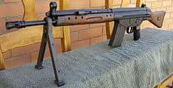
Arma semiautomática: Arma de fuego que después de cada disparo se recarga automáticamente y con la que solo es posible efectuar un disparo al accionar el disparador cada vez.
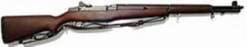
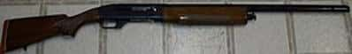
Arma de repetición : Arma de fuego que se recarga después de cada disparo, mediante un mecanismo accionado por el tirador que introduce en el cañón un cartucho colocado previamente en el depósito de municiones.
Arma de un solo tiro: Arma de fuego sin depósito de municiones, que se recarga antes de cada disparo mediante la introducción manual de un cartucho en la recámara o en un alojamiento especial a la entrada del cañón.
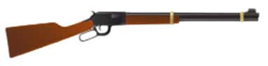
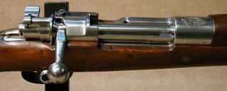
Además de las citadas en el párrafo anterior, existen multitud de tipos de armas no propuestas, pero no son objeto de estudio en el caso que nos ocupa.
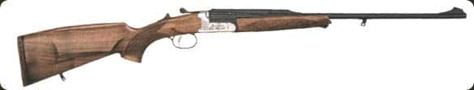
Cañón: elemento de un arma de fuego que conduce y estabiliza el proyectil.
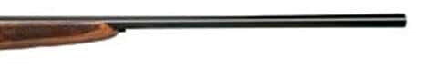
Culata: parte del arma que es apoyada sobre el hombro para efectuar el disparo.
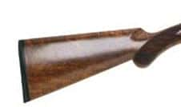
Ánima: El túnel dentro del cañón de un arma de fuego a través del cual viaja el proyectil. Se distinguen dos tipos: lisa y estriada. La primera se refiere a un arma de fuego que no tiene estrías en el interior del cañón. La segunda, aquella que posee estrías o surcos helicoidales en el interior del cañón. Las ánimas de los rifles son de este último tipo.
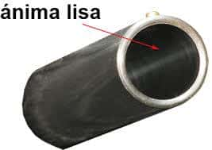
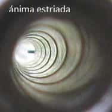
Disparador: Pieza que protege el guardamonte.
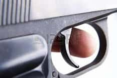
Choke: estrangulamiento de la boca de fuego del cañón de una escopeta cuya finalidad será la de concentrar más o menos la nube de plomos producida tras el disparo. Los rifles carecen de este tipo de chokes.
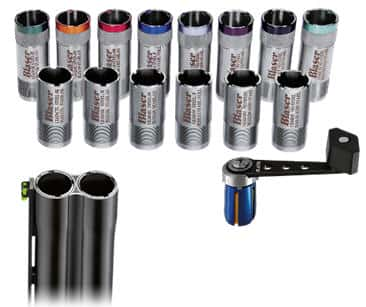
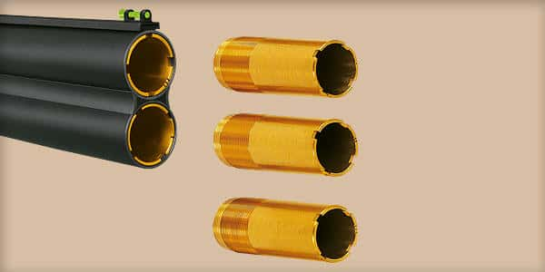
Extractores: En las escopetas superpuestas o paralelas son aquellas dos uñas que sirven para desalojar los cartuchos de la recámara.
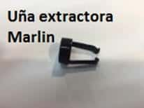
Conceptos a conocer de un arma semiautomática:
El extractor, el grapón y el percutor son piezas que componen el cerrojo.
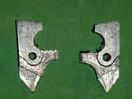
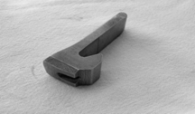
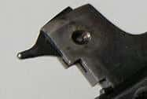
El cierre, es la pieza que introduce el cartucho en el interior de la recámara.
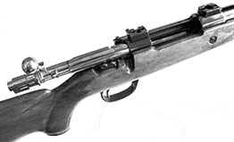
Conceptos a conocer de un arma superpuesta:
La banda intermedia ventilada que poseen algunos cañones, tiene como función refrigerar
los
cañones y amortiguar el efecto de los vientos laterales.
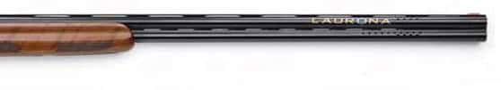
Cómo se cargan y descargan las armas amparadas con Licencia de Armas “E” y “D”:
Aquella escopeta preparada para disparar se dice que está “montada”, es decir: cuando el mecanismo de
disparo y
percusión se encuentra en disposición de funcionamiento. No debemos confundir dicho concepto con aquella que
denominamos “alimentada”, que es aquella que dispone en el interior del mecanismo de alimentación o depósito la
munición que vamos a disparar, aunque aún no esté preparada del todo para poder dispararse.
El
cartucho que
va a ser disparado se aloja en la recámara, como ya hemos definido anteriormente.
Para alimentar
una escopeta
colocaremos los cartuchos en esta recámara. Si es semiautomática, colocaremos estos en el depósito. Una vez
realizado
el disparo, estas armas semiautomáticas expulsan la vaina por la ventana de expulsión.
Cómo hacemos disparar estas armas:
Algunas escopetas superpuestas o yuxtapuestas (paralelas), disponen de expulsores
automáticos. Son
estos mecanismos los encargados de expulsar las vainas, automáticamente al abrir el arma, una vez realizado el
disparo.
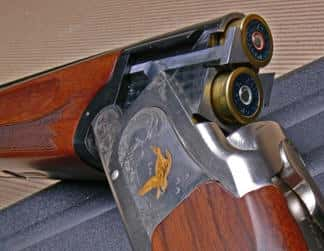
Para apuntar a un blanco determinado las armas cuentan con un mecanismo de puntería. El desplazamiento en altura del impacto será regulado por el alza y el desplazamiento lateral por el punto de mira.
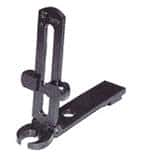
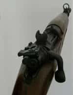
La pieza del mecanismo de disparo que transmite el movimiento del disparador es la biela.
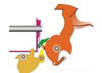
En las escopetas semiautomáticas la expulsión de la vaina se realiza aprovechando la fuerza del retroceso para desplazar el cierre.
Algunos rifles cuentan con uno o dos orificios situados en la parte anterior del cajón de
mecanismos y son los encargados de la salida de gases en caso de rotura del cartucho.
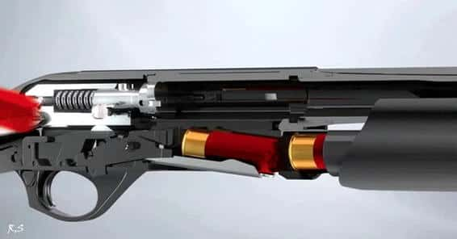
PIEZAS FUNDAMENTALES Y MECANISMOS DE DISPARO Y SEGURIDAD:
Piezas fundamentales:
Se considerarán piezas fundamentales o componentes esenciales:
De armas de fuego cortas:
el armazón, el cerrojo o cilindro y el cañón;
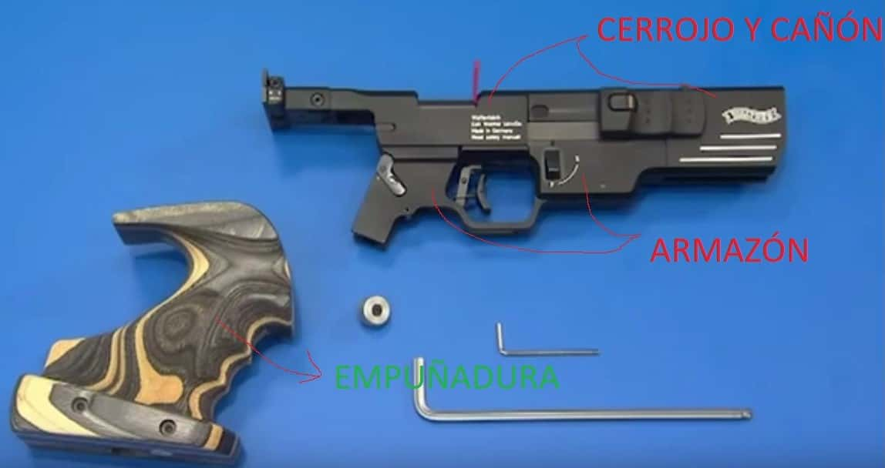
De armas de fuego largas, rayadas o de ánima lisa:
la caja o cajón de los mecanismos, el cerrojo o báscula y el cañón; así como los mecanismos de cierre de todas ellas.
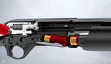
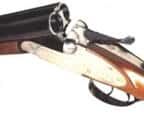
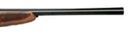
En cuanto al funcionamiento del mecanismo de disparo, el seguro manual evitará el disparo aun estando el arma montada (posición “S” del seguro en casi todas las armas superpuestas y paralelas). Si desbloqueamos el seguro manual y accionamos el gatillo, será el percutor el encargado de golpear el fulminante del cartucho realizándose por tanto el disparo.
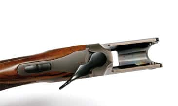
Una avería común si se dispara el arma en vacío puede ser la rotura de la aguja percutora.
Las escopetas semiautomáticas pueden tener seguro automático.
CONSERVACIÓN Y LIMPIEZA DE LAS ARMAS:
El interior de los cañones de una escopeta suele limpiarse con una varilla denominada baqueta, en
cuyo
extremo podremos intercambiar diferentes útiles para eliminar los residuos que deja la pólvora en el interior de
los
cañones. Para ayudarnos a lubricar el interior utilizaremos aceites lubricantes de los comúnmente
comercializados para
tal fin.
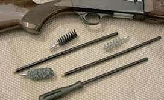
Las partes de madera como la culata o el guardamanos pueden limpiarse con aceite de linaza u otro producto específico para mantener dicha madera nutrida y en buenas condiciones.
Si durante el ejercicio de la caza si se moja el arma, debemos de limpiarla y engrasarla cuanto antes
para
evitar que se oxide. Esta limpieza, por seguridad, la realizaremos en un lugar del domicilio donde estemos
solos.
MEDIDAS DE SEGURIDAD A ADORTAR EN LA TENENCIA DE ARMAS:
Las armas de la categoría 2ª.2 (armas largas rayadas para caza mayor) las guardaremos en el propio
domicilio y
en un armero autorizado.
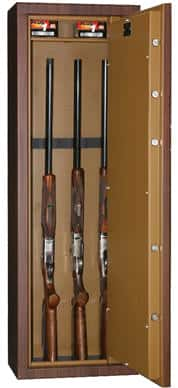
También pueden guardarse por empresas especializadas en la custodia de armas, debidamente autorizadas por la Dirección General de la Guardia Civil.
Las escopetas deberán guardarse fuera del alcance de otras personas y especialmente de los niños.
Las armas deberán portarse descargadas y sin alimentar. Nunca deberán dejarse en el vehículo estacionado
en la
vía pública hasta el día siguiente, aunque vayamos a ir de caza.
Las trataremos siempre como si estuviesen cargadas. Nunca apuntaremos con ellas a nadie. Caminaremos con
ellas
durante el ejercicio de la caza con el seguro manual accionado y con el cañón apuntando al cielo o al suelo.
Al coger o dejar un arma, siempre debe comprobarse que está descargada y si desconoces su
funcionamiento, nunca
debes manipularla. Es obvio decir que debes de portarla sin poner el dedo en el disparador (gatillo).
Al cerrar la escopeta lo harás con la boca del cañón apuntando al suelo y en caso de cruzarte con otras
personas
durante el ejercicio de la caza procederás a descargarla en cuanto adviertas la proximidad de ellas.
En el caso de los rifles de caza mayor, debemos estar seguros de visualizar la zona de impacto del
proyectil. No
disparando nunca hacia lugares donde pueda rebotar este (piedras, elementos metálicos, etc) ni tampoco hacia el
horizonte (viso).
Con el exacto cumplimiento de las normas de seguridad en el manejo de las armas pretendemos evitar que
se
produzcan disparos fortuitos y por tanto causar daños irreparables.
Tema 2:
CATEGORÍA DE LAS ARMAS SEGÚN EL VIGENTE REGLAMENTO DE ARMAS:
Se entenderá por «armas» y «armas de fuego» reglamentadas, cuya adquisición, tenencia y uso pueden ser
autorizados o permitidos con arreglo a lo dispuesto en este Reglamento, los objetos que, teniendo en cuenta sus
características, grado de peligrosidad y destino o utilización, se enumeran y clasifican en el presente artículo
en
las siguientes categorías:
1.ª categoría:
Armas de fuego cortas: Comprende las pistolas y
revólveres.
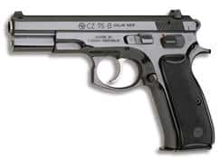
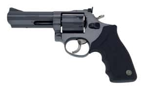
2.ª categoría:
1. Armas de fuego largas para vigilancia y guardería.
2. Armas de fuego largas rayadas: Se comprenden aquellas armas utilizables para caza mayor. También comprende los cañones estriados adaptables a escopetas de caza, con recámara para cartuchos metálicos, siempre que, en ambos supuestos, no estén clasificadas como armas de guerra.
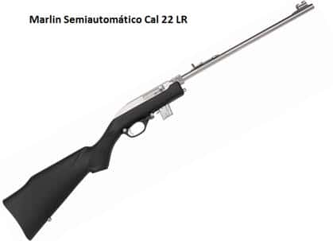
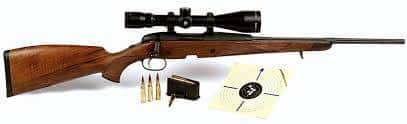
3.ª categoría:
1. Armas de fuego largas rayadas para tipo deportivo, de calibre 5,6 milímetros (.22
americano),
de percusión anular, bien sean de un disparo, bien de repetición o semiautomáticas.
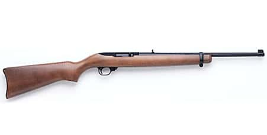
2 . Escopetas y demás armas de fuego largas de ánima lisa, o que tengan cañón con rayas para facilitar el plomeo, que los bancos de pruebas reconocidos hayan marcado con punzón de escopeta de caza, no incluidas entre las armas de guerra.
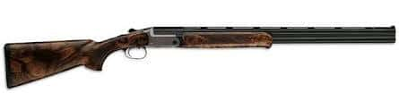
3. Armas accionadas por aire u otro gas comprimido, sean lisas o rayadas, siempre que la energía cinética del proyectil en boca exceda de 24,2 julios.
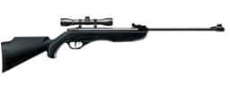
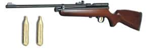
4.ª categoría:
1. Carabinas y pistolas, de tiro semiautomático y de repetición; y revólveres de doble
acción,
accionadas por aire u otro gas comprimido no asimiladas a escopetas.
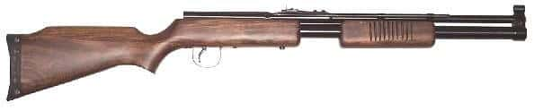
2. Carabinas y pistolas, de ánima lisa o rayada, y de un solo tiro, y revólveres de acción simple, accionadas por aire u otro gas comprimido no asimiladas a escopetas.
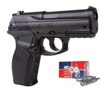
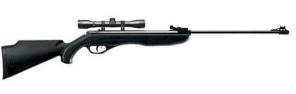
5.ª categoría:
1. Las armas blancas y en general las de hoja cortante o punzante no prohibidas.
2. Los cuchillos o machetes usados por unidades militares o que sean imitación de los mismos.
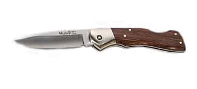
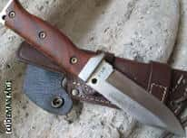
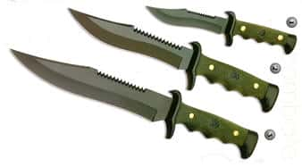
6.ª categoría:
1. Armas de fuego antiguas o históricas, sus reproducciones y asimiladas, conservadas en
museos
autorizados por el Ministerio de Defensa, si son dependientes de cualquiera de los tres Ejércitos, y por el
Ministerio
del Interior, en los restantes casos.
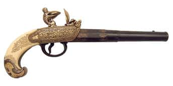
2. Las armas de fuego cuyo modelo o cuyo año de fabricación sean anteriores al 1 de enero de 1890, y las reproducciones y réplicas de las mismas, a menos que puedan disparar municiones destinadas a armas de guerra o a armas prohibidas.
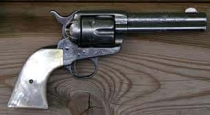
3. Las restantes armas de fuego que se conserven por su carácter histórico o artístico, dando cumplimiento a lo prevenido en los artículos 107 y 108 del presente Reglamento.
4. En general, las armas de avancarga.
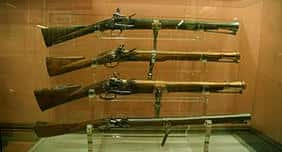
7.ª categoría:
1. Armas de inyección anestésica capaces de lanzar proyectiles que faciliten la captura o
control
de animales, anestesiándolos a distancia durante algún tiempo.
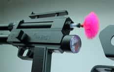
2. Las ballestas.
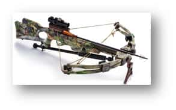
3. Las armas para lanzar cabos.
4. Las armas de sistema «Flobert». (no utilizaban pólvora, sino fulminato de mercurio)
5. Los arcos, las armas para lanzar líneas de pesca y los fusiles de pesca submarina que sirvan para disparar flechas o arpones, eficaces para la pesca y para otros fines deportivos.
6. Los revólveres o pistolas detonadoras y las pistolas lanzabengalas.
Las ballestas, incluidas en la 7ª categoría, son armas jurídicamente asimiladas a escopetas, sin embargo, no sería correcto documentarlas con la licencia tipo “D”. Tampoco sería correcto considerar un arco como un arma de este tipo.
El artículo 4 del actual reglamento de armas enumera las armas prohibidas. Los instrumentos no específicamente expresados y que están prohibidos serán aquellos otros especialmente peligrosos para la integridad física de las personas.
En función de su longitud, podemos dividir las armas en:
Arma de fuego corta: Arma de fuego cuyo cañón no exceda de 30 cm o cuya longitud total no exceda
de 60
cm.
Arma de fuego larga: Cualquier arma de fuego que no sea un arma de fuego corta.
ARMAS SEMIAUTOMÁTICAS, ARMAS DE REPETICIÓN, ARMAS PROHIBIDAS:
Recordamos lo expuesto en el tema 1 sobre armas automáticas, semiautomáticas y de repetición para
comprender
adecuadamente el temario que viene a continuación:
Arma automática: Arma de fuego que recarga automáticamente después de cada disparo y con la que
es
posible efectuar varios disparos sucesivos mientras permanezca accionado el disparador.
Arma
semiautomática: Arma de fuego que después de cada disparo se recarga automáticamente y con la que solo es
posible efectuar un disparo al accionar el disparador cada vez.
Arma de repetición: Arma de fuego que se recarga después de cada disparo, mediante un mecanismo
accionado
por el tirador que introduce en el cañón un cartucho colocado previamente en el depósito de municiones.
Armas prohibidas:
Queda prohibida la publicidad, compraventa, tenencia y uso, salvo por funcionarios especialmente
habilitados, y
de acuerdo con lo que dispongan las respectivas normas reglamentarias de:
a) Las armas semiautomáticas de las categorías 2.ª, 2 y 3.ª, 2, cuya capacidad de carga sea superior a
cinco
cartuchos, incluido el alojado en la recámara, o cuya culata sea plegable o eliminable.
b) Los «sprays» de defensa personal y todas aquellas armas que despidan gases o aerosoles, así como
cualquier
dispositivo que comprenda mecanismos capaces de proyectar sustancialmente estupefacientes, tóxicas o corrosivas.
De lo dispuesto en el presente apartado se exceptúan los «sprays» de defensa personal que, en virtud de la correspondiente aprobación del Ministerio de Sanidad y Consumo, previo informe de la Comisión Interministerial Permanente de Armas y Explosivos, se consideren permitidos, en cuyo caso podrán venderse en las armerías a personas que acrediten su mayoría de edad mediante la presentación del documento nacional de identidad, pasaporte, autorización o tarjeta de residencia.
c) Las defensas eléctricas, de goma, tonfas o similares.
d) Los silenciadores aplicables a armas de fuego.
e) La cartuchería con balas perforantes, explosivas o incendiarias, así como los proyectiles correspondientes.
f) Las municiones para pistolas y revólveres con proyectiles «dum-dum» (bala expansiva) o de punta hueca, así como los propios proyectiles.
g) Las armas de fuego largas de cañones recortados.
Queda prohibida la tenencia, salvo en el propio domicilio como objeto de adorno o de coleccionismo, de imitaciones de armas de fuego que por sus características externas puedan inducir a confusión sobre su auténtica naturaleza, aunque no puedan ser transformadas en armas de fuego.
Se exceptúan de la prohibición aquellas cuyos modelos hayan sido aprobados previamente por la Dirección
General
de la Guardia Civil, con arreglo a la normativa dictada por el Ministerio del Interior.
Queda prohibido el uso por particulares de cuchillos, machetes y demás armas blancas que formen parte de
armamentos debidamente aprobados por autoridades u organismos competentes. Su venta requerirá la presentación y
anotación del documento acreditativo del cargo o condición de las personas con derecho al uso de dichos
armamentos.
También se prohíbe la comercialización, publicidad, compraventa, tenencia y uso de las navajas no
automáticas
cuya hoja exceda de 11 centímetros, medidos desde el reborde o tope del mango hasta el extremo.
No se considerarán comprendidas en las prohibiciones anteriores, la fabricación y comercialización con
intervención de la Guardia Civil, en la forma prevenida en los artículos 12.2 y 106 de este Reglamento, la
compraventa
y la tenencia exclusivamente en el propio domicilio, con fines de ornato y coleccionismo, de las navajas no
automáticas cuya hoja exceda de 11 centímetros.
Armas de guerra:
Se consideran armas de guerra, quedando en consecuencia prohibidos su adquisición, tenencia y uso por
particulares:
a) Armas de fuego o sistemas de armas de fuego de calibre igual o superior a 20 milímetros.
b) Armas de
fuego o sistemas de armas de fuego de calibre inferior a 20 milímetros, cuyos calibres sean considerados por el
Ministerio de Defensa como de guerra.
c) Armas de fuego automáticas.
d) Las municiones para las armas indicadas en los apartados a) y b).
e) Los conjuntos, subconjuntos y piezas fundamentales de las armas y municiones indicadas en los
apartados a) a
d), así como, en su caso, sus sistemas entrenadores o subcalibres.
f) Bombas de aviación, misiles, cohetes, torpedos, minas, granadas, así como sus subconjuntos y piezas
fundamentales.
g) Las no incluidas en los apartados anteriores y que se consideren como de guerra por el Ministerio de
Defensa.
Un caso particular es el de los calibres 308 win (7'62 X 51 mm.) y 7'62 x 39 que son de los denominados
de
guerra, aun así podrán utilizarse para el ejercicio de la caza con bala expansiva y rifle de repetición.
Tema 3:
CIRCULACIÓN DE ARMAS:
Guías de circulación:
La guía de circulación es el documento que ampara el traslado, sin
licencia ni
guía de pertenencia, entre dos lugares, de armas de las categorías 1.ª, 2.ª, 3.ª y 6.ª y sus piezas
fundamentales y de
las armas completas de la categoría 7.ª.1, 2, 3 y 4, aunque vayan despiezadas. Esta guía será expedida por la
Intervención de Armas del lugar de compra.
En la guía de circulación se reseñará la cantidad, tipo,
marca y,
en su caso, modelo, calibre, serie y número de fabricación o contraseña de las armas; si el envío lleva piezas;
los
nombres del remitente, consignatario y destinatario; el número de envases y la marca y el detalle del
precinto.
Las guías de circulación ordinarias serán de dos clases:
A) Guías de circulación para el
territorio
nacional y para tránsito.
B) Guías de circulación para la exportación e importación.
Envases y precintos de armas y piezas fundamentales:
Las armas
reglamentadas de
cualquier categoría y sus piezas fundamentales acabadas circularán en envases debidamente acondicionados para su
seguridad durante el traslado.
Los envases para el comercio interior de armas de fuego no deberán
contener
más de 25 armas ni llevar armas cortas o largas de cañón estriado junto con escopetas de caza y
asimiladas.
Los envases de armas de fuego para el comercio exterior pueden contener cualquier número de armas, siempre que
ofrezcan suficientes garantías de seguridad.
Cada envase puede llevar cualquier número de piezas,
salvo que
constituyan conjuntos ensamblables que puedan formar armas completas, en cuyo caso habrá de respetarse el límite
de 25
armas citado anteriormente; pero no pueden remitirse en un mismo envase ni reseñarse en la misma guía, armas o
piezas
que correspondan a distintos destinatarios.
Los envases de armas cortas o largas de cañón estriado,
escopetas
de caza y armas asimiladas han de ser precintados por las Intervenciones de Armas de la Guardia Civil, o por los
comerciantes de armas autorizados, que se responsabilizarán de su contenido.
Envío de armas y
piezas
fundamentales:
Los envíos habrán de hacerse por ferrocarril o por empresas de transportes
marítimas,
aéreas o terrestres, debiendo efectuarse a través de empresas de seguridad siempre que excedan de 25 armas
cortas o 50
armas largas.
En la misma forma, podrán ser remitidas armas de fuego por las Intervenciones de
Armas de la
Guardia Civil o con destino a las mismas.
Las fábricas y armerías autorizadas podrán realizar los
transportes
utilizando sus propios medios.
En ningún caso podrán hacerse envíos o transportes de armas cargadas
ni de
armas conjuntamente con cartuchería susceptible de ser utilizada con las armas transportadas.
Al
particular
que desee adquirir una escopeta en localidad distinta a la de su residencia, la Intervención de Armas
correspondiente
a dicha localidad podrá expedir, a la vista del parte de venta y de la licencia E, una guía de circulación de
aquélla.
El interesado se presentará posteriormente, dentro de un plazo de diez días, en la Intervención de Armas de su
residencia y solicitará la expedición de la correspondiente guía de pertenencia.
Recepción de
expediciones:
Cuando los particulares que sean destinatarios de envíos de armas reciban
comunicación
del remitente de haberles sido enviadas a la consignación de la Intervención de Armas, se presentarán en ésta
provistos de la licencia o documento que les autorice para adquirirlas, a fin de retirarlas previa documentación
de
las mismas, firmando su recepción en la filial de la guía de circulación.
REVISTA DE ARMAS:
La obligatoriedad de la revista de armas. Cuándo se debe pasar y
ante
quién:
Las armas de la 1.ª categoría, y todas las de concurso, pasarán revista cada tres
años.
Las demás armas que precisen guía de pertenencia, pasarán revista cada cinco años.
Las
anotaciones de la revista de armas se llevarán a cabo en la forma que se determine y se realizarán por los
Interventores de Armas.
Para el pase de la revista, es inexcusable la presentación del arma,
personalmente o
por medio de tercero debidamente autorizado por escrito.
El hecho de no pasar dos revistas
consecutivas, a
parte de la correspondiente sanción económica, será causa de anulación y retirada de la guía de pertenencia,
debiendo
quedar el arma depositada en la correspondiente Intervención de Armas. Constituye este hecho una infracción
administrativa.
TRANSFERENCIA DE ARMAS:
Cambio de
titularidad:
El particular que desee enajenar un arma tiene que hacer la cesión a persona que posea la licencia, tarjeta o
certificado de inutilización correspondientes.
La Intervención de Armas expedirá una nueva Guía de
Pertenencia a la persona que recibe el arma o comprador.
La cesión se hará con conocimiento de la
Intervención de Armas, la cual recogerá la guía de pertenencia del vendedor y, a la vista del arma, extenderá
una
nueva al comprador en la forma prevenida.
La guía de pertenencia recogida se anulará y se enviará a
la
Dirección General de la Guardia Civil para su anotación en el Registro Central de Guías y de Licencias.
Cesión temporal de armas:
Tanto los españoles como los extranjeros residentes en España
podrán
prestar sus armas de caza a quienes estén provistos de licencia de caza y de la licencia de arma larga rayada
para
caza mayor o escopeta correspondiente, según los casos, con una autorización escrita, fechada y firmada, para su
uso
durante quince días como máximo y precisamente
para cazar. También se podrán prestar, con autorización escrita, pistolas, revólveres y armas de concurso, para la práctica de tiro deportivo, a quienes estén reglamentariamente habilitados para su uso. Las armas se prestarán siempre con sus guías de pertenencia.
Con igual autorización y a los mismos efectos, podrán prestarse las documentadas con tarjeta de armas,
acompañadas de este documento.
Tema 4:
DOCUMENTACIÓN PARA LA TENENCIA Y USO DE ARMAS:
Tipos de licencia de armas:
Nadie podrá llevar ni poseer armas de fuego en territorio español sin disponer de la correspondiente
autorización expedida por los órganos administrativos a quienes este Reglamento atribuye tal competencia. Si se
tratara de personas residentes en un Estado miembro de la Comunidad Económica Europea distinto de España, la
concesión
de la autorización deberá ser comunicada a la autoridad competente de dicho Estado.
La tenencia y el uso de las armas de las categorías 1.ª, 2.ª y 3.ª precisará de licencia de armas.
La licencia de armas A, con la eficacia de las licencias B, D y E, documentará las armas de las
categorías 1.ª,
2.ª y 3.ª de propiedad privada del personal de los Cuerpos Específicos de los Ejércitos, de los Cuerpos Comunes
de las
Fuerzas Armadas, de las Fuerzas y Cuerpos de Seguridad y del Servicio de Vigilancia Aduanera.
Las demás licencias para armas de las categorías 1.ª, 2.ª y 3.ª serán:
a) La licencia de armas B para armas de fuego cortas de particulares.
b) La licencia C, para armas de dotación del personal de vigilancia y seguridad no citadas en el párrafo
anterior donde hemos hecho alusión a la licencia de armas A.
c) La licencia D de arma larga rayada para caza mayor.
d) Los poseedores de armas de las categorías 3.ª y 7.ª, 2 y 3, precisarán licencia de armas E.
La licencia de armas F documentará las armas de concurso de tiro deportivo de afiliados de federaciones
deportivas que utilicen armas de fuego para la práctica de la correspondiente actividad deportiva.
Para llevar y usar armas de la categoría 4.ª se necesita obtener tarjeta de armas.
Los poseedores de armas de las categorías 6.ª y 7ª., 4, deberán documentarlas en la forma prevenida en
el
artículo 107.
Las autorizaciones de tenencia de fusiles de inyección anestésica deberán ser específicas para su uso en
lugares
concretos, y para poder adquirir dichas armas será necesaria la exhibición de las autorizaciones a los
establecimientos vendedores que, previa comprobación de las mismas, anotarán la venta en los libros
correspondientes.
Para la posesión y uso de armas combinadas que participen de las características de armas de más de una
categoría, cuyo régimen no se halle especialmente determinado, se tendrá en cuenta, a efectos de documentación,
el
arma componente de mayor peligrosidad y habrá de obtenerse la autorización de menor duración y correspondiente a
las
armas que precisen mayores garantías a efectos de seguridad.
La solicitud de expedición de las licencias de armas habrá de presentarse en la Intervención de Armas de
la
Guardia Civil correspondiente al domicilio del interesado, acompañada de la siguiente documentación:
a) Certificado de antecedentes penales en vigor.
b) Fotocopia del documento nacional de identidad en vigor o, en su caso, de la tarjeta de autorización
de
residencia, que será cotejada con su original y devuelta al interesado.
c) Informe de las aptitudes psicofísicas.
Cuando se trate de la obtención de licencias sucesivas, el solicitante que sea titular de armas
correspondientes
a la licencia que se solicita habrá de presentar, con la solicitud de nueva concesión, el arma o armas
documentadas,
personalmente o por medio de tercero autorizado por escrito y que cuente con licencia correspondiente al arma o
armas
de que se trate, a efectos de revista.
Como norma general el solicitante de una nueva licencia de armas debe tener cumplidos los 18 años. No
obstante,
existe la posibilidad de autorizaciones especiales de uso de armas para menores:
Los españoles y extranjeros, con residencia en España, que sean mayores de dieciséis años y menores de
dieciocho, podrán utilizar exclusivamente para la caza o para competiciones deportivas en cuyos Reglamentos se
halle
reconocida la categoría «junior», pero no poseer ni llevar dentro de las poblaciones, armas largas rayadas para
caza
mayor o, en su caso, de la categoría 3.ª, 1, siempre que se encuentren en posesión legal de una autorización
especial
de uso de armas para menores y vayan acompañados de personas mayores de edad, con licencia de armas D, E o F,
que
previamente se hayan comprometido a acompañarlos y vigilarlos en cada cacería o acto deportivo.
Con las mismas condiciones y requisitos, los mayores de catorce años y menores de dieciocho podrán
utilizar las
armas de la categoría 3.ª, 2, para la caza y las de la categoría 3.ª, 2 y 3 , para competiciones deportivas en
cuyos
Reglamentos se halle reconocida la categoría «junior», obteniendo una autorización especial de uso de armas para
menores.
Las autorizaciones especiales de uso de armas para menores tendrán validez hasta la mayoría de edad de
sus
titulares, sin necesidad de obtener renovaciones, y será competente para concederlas el Director general de la
Guardia
Civil.
Las solicitudes se presentarán en las Comandancias o Puestos de la Guardia Civil correspondientes al
domicilio
del interesado suscritas por éste y por la persona que ejerce la patria potestad o la tutela sobre el mismo, y
habrán
de acompañarse los documentos siguientes:
a) Certificado de antecedentes penales, si se trata de
mayores de
dieciséis años.
b) Certificado de antecedentes penales de la persona que ejerza la patria potestad o la tutela sobre el
solicitante.
c) Fotocopias de los documentos nacionales de identidad en vigor de ambos, o de las tarjetas o
autorizaciones de
residencia si se trata de extranjeros, que serán cotejadas con sus originales, devolviéndose éstos a los
interesados.
d) Autorización para el uso de armas de las clases expresadas, otorgada por la persona que ejerza la
patria
potestad o la tutela, responsabilizándose de su actuación, ante Notario, autoridad gubernativa, alcaldía,
Comisaría de
Policía, Comandancia, Intervención de Armas o Puesto de la Guardia Civil.
e) Informe de aptitudes psicofísicas.
No será necesaria la presentación de los documentos reseñados, relativos a la persona que ejerza la
patria
potestad o la tutela, si ésta se encuentra en posesión de cualquier licencia de armas en vigor.
Las solicitudes y los documentos señalados habrán de ser remitidos a la Dirección General de la Guardia
Civil,
acompañándose informe de conducta y antecedentes del interesado y de la persona que ejerza la patria potestad o
la
tutela.
Autorizaciones temporales de uso de armas en el caso de renovación y en el caso de pérdida, destrucción,
robo o
extravío:
Cuando los titulares de licencias de armas, próximas a caducar, soliciten su nueva concesión, las
Intervenciones
de Armas de la Guardia Civil que reciban las solicitudes con las correspondientes documentaciones podrán expedir
a los
solicitantes autorizaciones temporales de uso de dichas armas, cuyo plazo de validez será de tres meses,
recogiéndoles
al propio tiempo las licencias próximas a caducar.
En todo caso de pérdida, destrucción, robo o sustracción de armas de las categorías 1.ª, 2.ª y 3.ª el
titular
deberá dar cuenta inmediata por conducto jerárquico cuando proceda, a la Intervención de Armas de la Guardia
Civil
correspondiente con entrega de la guía de pertenencia. Si del procedimiento que instruya la Intervención de
Armas en
averiguación de los hechos, resultara comprobada la destrucción del arma o se dedujera la falta de
responsabilidad del
interesado, éste conservará su licencia, pudiendo adquirir otra arma en la forma establecida, sin que se le
imponga
sanción alguna.
Cuando se hubieran perdido, destruido, robado o sustraído las licencias o las guías de pertenencia, el
titular
deberá asimismo dar cuenta inmediata a la Intervención de Armas, que podrá extender autorización temporal de uso
de
armas, válida durante la tramitación del procedimiento, o exigir el inmediato depósito de las armas. Si como
consecuencia del procedimiento que se instruya resulta que no existe culpa por parte del interesado, se le
expedirá
nueva documentación definitiva, procediéndose en su caso a anular la extraviada, robada o sustraída y se le
devolverán
las armas si siguieran depositadas.
Guías:
Para la tenencia de las armas de las categorías 1.ª, 2.ª, 3.ª, 6.ª y 7.ª; 1, 2, 3 y
4, cada arma
habrá de estar documentada con su correspondiente guía de pertenencia.
Como norma general las guías de pertenencia serán expedidas a los titulares de las armas por las
Intervenciones
de Armas.
En la guía de pertenencia, extendida en el correspondiente impreso confeccionado por la Dirección
General de la
Guardia Civil, se harán constar el número del documento nacional de identidad o documento equivalente y los
datos
personales del propietario del arma, así como los de la licencia correspondiente; contendrá una reseña completa
del
arma; y la acompañará siempre, en los casos de uso, depósito y transporte.
En los casos en que el titular de las armas sea un organismo, entidad o empresa, se hará constar su
denominación
o razón social en el lugar correspondiente de la guía.
En la misma guía del arma se reseñarán, en su caso, los cañones, tambores, calibres y subcalibres
intercambiables que se adquieran para usar con aquélla, siempre que no supongan cambio de categoría del arma.
Categoría y número de armas que amparan las Licencias de Armas:
Las armas de las categorías 3.ª y 7.ª, 2 y 3, precisarán una licencia E de armas, que autorizará para
poseer,
llevar y usar las armas de dichas categorías. Su número no excederá de seis escopetas o de seis armas largas
rayadas
para tiro deportivo, ni de doce armas en total.
Tarjetas de armas:
Como norma general, la tenencia de arma de fuego reglamentada durante un viaje por España por parte de
un
residente de otro país miembro de la Unión Europea solamente será autorizada por la Dirección General de la
Policía y
de la Guardia Civil, ámbito de la Guardia Civil, si el interesado ha obtenido a tal efecto la Tarjeta Europea de
Armas
de Fuego.
Igualmente los españoles y extranjeros residentes en España que se desplacen a otro país de la Unión
Europea
deberán estar en posesión de la Tarjeta Europea de Armas de Fuego.
A las personas mencionadas en el apartado primero podrá concedérseles una autorización para uno o varios
desplazamientos y para un plazo máximo de un año, renovable. Dicha autorización se hará constar en la Tarjeta
Europea
de Armas de Fuego, que el viajero deberá exhibir dentro de España ante todo requerimiento de los miembros de las
Fuerzas y Cuerpos de Seguridad.
No obstante lo dispuesto en el apartado primero, los cazadores respecto a las armas de caza de las
categorías
2.ª, 2 y 3.ª, 2 y los tiradores deportivos, respecto a las armas de concurso de las categorías 1.ª, 2.ª y 3.ª,
podrán
tener en su poder sin autorización previa una o varias armas de fuego durante un viaje a España con el fin de
practicar sus actividades, siempre y cuando estén en posesión de una Tarjeta Europea de Armas de Fuego, en la
que se
enumeren dicha o dichas armas de fuego y puedan probar el motivo del viaje, en particular exhibiendo una
invitación u
otra prueba de sus actividades de caza o de tiro deportivo en nuestro país. No se podrá condicionar la
aceptación de
una Tarjeta Europea de Armas de Fuego emitida por otro Estado al pago de tasas o cánones.
La Tarjeta Europea de Armas de Fuego será expedida, previa solicitud, por la Dirección General de la
Policía y
de la Guardia Civil, ámbito de la Guardia Civil, a los residentes en España que estén debidamente documentados
para la
tenencia y uso en territorio español de las armas de que se trate. Será válida por un período máximo de cinco
años,
que podrá prorrogarse mientras se mantenga la titularidad de las armas que ampare. La Tarjeta Europea de Armas
de
Fuego será intransferible y se harán constar en ella el arma o las armas de fuego que posea y utilice el titular
de la
Tarjeta. El usuario del arma de fuego deberá llevar siempre consigo la Tarjeta. Se mencionarán en la Tarjeta los
cambios en la tenencia o en las características de las armas, así como la pérdida o robo de las mismas. Los
visados
que se lleven a cabo sobre esta Tarjeta cuando sea utilizada para su entrada en España no estarán gravados por
ningún
tipo de tasa o canon.
Al expedir la Tarjeta Europea de Armas de Fuego se informará por escrito al titular sobre los Estados
miembros
de Unión Europea que tengan prohibidas o sometidas a autorización la adquisición y tenencia de las armas de
fuego a
que se refiera la tarjeta.
CONDICIONES GENERALES PARA LA OBTENCIÓN DE LICENCIAS Y TARJETAS EUROPEAS DE ARMAS DE FUEGO:
Quienes pueden ser los titulares de las Licencias de Armas, Autorizaciones y de las Tarjetas Europeas,
que
requisitos se necesitan para ello, cuando caducan y que ámbito de validez tienen:
Citaremos en este apartado aquellos puntos que aun habiendo sido ya tratados anteriormente, gozan de
especial
interés por aparecer de manera específica en las preguntas de la prueba teórica:
Se podrá acreditar, para la solicitud de licencias de armas tipo “D”, la práctica del ejercicio de la
caza
mediante la presentación de una licencia de caza.
Se les podrá expedir una Tarjeta Europea de Armas a aquellos españoles y extranjeros residentes en
España.
En la renovación de la Tarjeta Europea de Armas se exigirá mantener la titularidad de las armas que
ampare dicha
Tarjeta.
Las autorizaciones especiales de uso de armas para menores tendrán validez hasta la mayoría de edad.
La edad mínima para utilizar un arma larga rayada para caza o tiro deportivo será de 16 años.
La edad
mínima para utilizar armas de las categorías 3ª.2 y 3ª.3 será de 14 años.
Los menores cuando utilicen armas de la categoría 2ª.2 o 3ª, irán siempre acompañados por personas
mayores de
edad con licencias de armas D, E o F. Estas personas se habrán comprometido previamente a acompañarlo y
vigilarlo en
cada cacería o acto deportivo.
Estos menores no podrán ser titulares de escopetas ni rifles.
Las solicitudes de autorizaciones especiales de uso de armas para menores estarán suscritas por el
interesado y
por la persona que ejerce la patria potestad o tutela.
Para mantener la vigencia de las licencias de armas con la duración asociada a cada una de ellas, las
expedidas
a mayores de sesenta años necesitarán ser visadas cada dos años por la autoridad competente, previa aportación
por el
interesado de informe favorable, expedido por un centro de reconocimiento autorizado o, en su caso, previa
superación
de las correspondientes pruebas complementarias de aptitud. Respecto a las expedidas a mayores de setenta años,
dicha
formalidad deberá efectuarse con carácter anual.
Causas de revocación de las licencias de armas y plazos:
En caso de no mantenerse los requisitos que se exigen para el otorgamiento de una licencia de armas
procede
revocar dicha licencia.
La retirada de las armas implica la desposesión de las mismas y la prohibición de la adquisición y
tenencia de
otras durante el plazo que se determine, que no podrá exceder de dos años.
La retirada de las licencias o autorizaciones especiales supone la revocación de los mismos; constituirá
impedimento para su renovación durante el tiempo, no superior a dos años, por el que hubiere sido impuesta, e
implicará el depósito obligatorio de las armas.
Tanto la retirada de las armas como la de las licencias o autorizaciones especiales será comunicada por
la
autoridad sancionadora al Registro Central de Guías y de Licencias, y se anotará en su caso en la Tarjeta
Europea de
Armas de Fuego.
La vigencia de una licencia de armas estará condicionada al mantenimiento de los requisitos exigibles en
el
Reglamento de Armas. La Administración podrá comprobar el mantenimiento de dichos requisitos para mantener la
vigencia
de la licencia de armas en cualquier momento.
TRÁMITE DE LAS SOLICITUDES:
Requisitos para la obtención de licencias de armas “E” y “D” (Orden de 18 de marzo de 1998 del Mº del
Interior y
Resolución de 19 de octubre de 1998 de la D.G.G.C.):
Para obtener licencia para la tenencia y uso de armas largas rayadas para caza mayor o para escopetas y
armas
asimiladas se superarán unas pruebas de capacitación que versarán sobre el conocimiento de las armas, su cuidado
y
conservación y sobre habilidad para su manejo y utilización.
A quién se debe conceder las Licencias de Armas, las Tarjetas Europeas de Armas y las Tarjetas de armas,
qué
documentos deben presentarse, cuáles son las causas de su concesión y quién las expide:
La Guía de Pertenencia de un arma la expide el Interventor de Armas.
La solicitud de expedición de las licencias de armas habrá de presentarse en la Intervención de Armas de
la
Guardia Civil correspondiente al domicilio del interesado, acompañada de la siguiente documentación:
a) Certificado de antecedentes penales en vigor.
b) Fotocopia del documento nacional de identidad en vigor o, en su caso, de la tarjeta de autorización
de
residencia, que será cotejada con su original y devuelta al interesado.
c) Informe de las aptitudes psicofísicas.
En caso de solicitarse licencias de armas tipo E, también se adjuntará acreditación de la dedicación
real al
ejercicio de la caza o de los deportes correspondientes.
Cuando se trate de la obtención de licencias sucesivas, el solicitante que sea titular de armas
correspondientes
a la licencia que se solicita habrá de presentar, con la solicitud de nueva concesión, el arma o armas
documentadas,
personalmente o por medio de tercero autorizado por escrito y que cuente con licencia correspondiente al arma o
armas
de que se trate, a efectos de revista.
Las solicitudes para la expedición de la licencia de armas se presentarán en la Intervención de Armas de
la
Guardia Civil correspondiente al domicilio del interesado.
Tema 5:
RÉGIMEN SANCIONADOR:
En materia de armas los hechos pueden ser constitutivos de infracciones penales e infracciones
administrativas.
Estas últimas pueden dividirse en muy graves, graves y leves.
Las autoridades competentes para ordenar la instrucción de un procedimiento sancionador en materia de
armas son:
el Director General de la Guardia Civil, el Delegado de Gobierno y los Alcaldes.
Prescripción de infracciones administrativas y sanciones:
Las infracciones administrativas leves prescribirán a los 3 meses.
Las infracciones administrativas graves prescribirán al año.
Las infracciones administrativas muy graves prescribirán a los dos años.
Las sanciones leves prescribirán al año.
Las sanciones graves prescribirán a los dos años.
Las sanciones muy graves prescribirán a los cuatro años.
Dichas sanciones serán ejecutivas cuando las resoluciones adquieran firmeza en vía administrativa.
En ningún caso podrán imponerse sanciones penales y administrativas para un mismo hecho.
INFRACCIONES MUY GRAVES, GRAVES Y LEVES:
Si no constituyeren delitos, serán consideradas infracciones muy graves por la entidad del riesgo
producido y
sancionadas:
a) La fabricación, reparación, almacenamiento y comercio:
1. De armas de fuego prohibidas o de armas de guerra sin la adecuada habilitación, con multa de
30.050,61 a
601.012,1 euros e incautación de las armas y de los instrumentos o efectos utilizados para la comisión de la
infracción y clausura de las fábricas, locales o establecimientos, desde seis meses y un día hasta dos años de
duración.
2. De armas de fuego de defensa personal, de armas largas rayadas, de armas de vigilancia y guardería y
de armas
largas de ánima lisa, sin la pertinente autorización, con multas de 30.050,61 a 300.506,05 euros, incautación de
las
armas, de los instrumentos o efectos utilizados para la comisión de la infracción, y clausura de las fábricas,
locales
o establecimientos, desde seis meses y un día hasta un año de duración.
b) El uso de armas de fuego prohibidas, con multa de 30.050,61 a 60.101,21 euros e incautación de las
armas
utilizadas y de sus municiones.
c) El uso de armas de fuego cortas, careciendo de la licencia, autorización especial o de la guía de
pertenencia, con multa de 30.050,62 a 60.101,21 euros e incautación de las armas utilizadas y de sus municiones.
d) La omisión, insuficiencia o ineficacia de las medidas o precauciones obligatorias para garantizar la
seguridad en las fases de fabricación, reparación, almacenamiento, distribución y comercio, de armas de defensa
personal, de armas de vigilancia y guardería o de armas largas rayadas, con multa de 30.050,62 a 300.056,05
euros,
conjunta o alternativamente con suspensión temporal de las autorizaciones, desde seis meses y un día hasta un
año de
duración. Si como consecuencia de la infracción se hubiera producido pérdida, sustracción o robo de armas,
además de
la multa, se impondrá la clausura de las fábricas, locales o establecimientos, desde seis meses y un día hasta
dos
años de duración.
Si no constituyeren delito, serán consideradas infracciones graves, y sancionadas:
a) Cuando se trate de armas blancas, de aire comprimido o de las demás comprendidas en las categorías
4.ª a 7.ª,
la fabricación, reparación, almacenamiento, distribución y comercio de armas prohibidas o de armas reglamentadas
sin
autorización, con multas de 300,51 a 30.050,61 euros, clausura de las fábricas, locales y establecimientos de
hasta
seis meses de duración e incautación de los instrumentos o efectos utilizados para la comisión de la infracción.
b) La omisión, insuficiencia o ineficacia de las medidas o precauciones obligatorias para garantizar la
seguridad en las fases de fabricación, reparación, almacenamiento, circulación y comercio de armas largas de
ánima
lisa o de otras armas cuya tenencia requiera licencia E, con multa de 300,51 a 30.050,61 euros. Si como
consecuencia
de la infracción se hubiera producido pérdida, sustracción o robo de armas, además de la multa, se impondrá la
clausura de las fábricas, locales o establecimientos de hasta seis meses de duración.
c) La omisión, insuficiencia o ineficacia de las medidas o precauciones obligatorias para garantizar la
seguridad de las armas que posean los particulares, en los domicilios o lugares de uso, o en circulación, si es
de
armas de defensa personal, de armas de vigilancia y guardería o de armas largas rayadas, con multa de 300,51 a
3.005,06 euros. Si como consecuencia de la infracción se hubiera producido pérdida, sustracción o robo de las
armas,
las sanciones serán de hasta 6.010,12 euros y retirada de las licencias o permisos correspondientes a aquéllas,
de
hasta seis meses de duración.
d) La omisión, insuficiencia o ineficacia de las medidas o precauciones obligatorias para garantizar la
seguridad de las armas en los domicilios o lugares de uso, o en circulación, con multa de 300,51 a 1.502,53
euros, si
se trata de armas largas de ánima lisa, y con multa de hasta 3.005,06 euros, si como consecuencia se hubiera
producido
pérdida, sustracción o robo de las armas.
e) El impedimento o la omisión de la colaboración obligatoria para la realización de los controles o
inspecciones prevenidos sobre la fabricación, reparación, almacenamiento, distribución, comercio, tenencia y
utilización, con multa de 300,52 a 30.050,61 euros, conjunta o alternativamente con suspensión temporal de hasta
seis
meses de duración, si se trata de armas de defensa personal, de armas de vigilancia y guardería, de armas largas
rayadas o de armas largas de ánima lisa.
f) La adquisición, tenencia, cesión o enajenación de armas por particulares, sin tener las
autorizaciones o
licencias prevenidas al efecto o la alegación de datos o circunstancias falsos para su obtención, con multa de
300,51
a 1.202,02 euros, si se trata de armas de defensa personal, de armas de vigilancia y guardería, de armas largas
rayadas o de armas de ánima lisa.
g) El uso de cualesquiera clase de armas de fuego reglamentadas no incluidas en los apartados b) y c) de
apartado anterior (infracciones muy graves), careciendo de la licencia, autorización o de la guía de
pertenencia, con
multas de 300,51 a 601,01 euros e incautación de las armas.
h) El uso de cualesquiera clase de armas de fuego reglamentarias, con omisión o insuficiencia de las
medidas o
precauciones obligatorias para garantizar la seguridad de las personas y de las cosas, con multas de 300,51 a
6.010,12
euros y retirada de las armas y municiones objeto de la infracción, así como de las licencias y guías de
pertenencia
correspondientes a las mismas, desde seis meses y un día hasta dos años de duración.
i) Portar armas de fuego o de cualesquiera otra clase en establecimientos públicos y lugares de reunión,
concentración, recreo o esparcimiento, salvo en los lugares habilitados para su uso, con multas de 300,51 a
450,76
euros, incautación de las armas y, en su caso, retirada de las licencias o permisos correspondientes.
j) Utilizar armas de fuego o de cualesquiera otra clase, sin adoptar las medidas o precauciones
necesarias para
no causar peligro, daños, perjuicios o molestias a terceras personas o a sus bienes, o contraviniendo las
prohibiciones establecidas en el artículo 146 de este Reglamento, con multas de 300,51 a 601,01 euros,
incautación de
las armas y, en su caso, retirada de las licencias o autorizaciones correspondientes.
Si no constituyeren delito, serán consideradas infracciones leves y sancionadas:
a) Las tipificadas en los apartados b) a f) del apartado anterior, referidas a armas blancas, de aire
comprimido, o las demás comprendidas en las categorías 4.ª a 7.ª, con multas de hasta 300,51 euros.
b) La omisión de las revistas, de los depósitos o de la exhibición de las armas a los agentes de la
autoridad,
cuando sean obligatorios:
1. Con multa de hasta 300,51 euros y retirada de las armas, cuando se trate de armas de las categorías
1.ª y
2.ª.
2. Con multa de hasta 150,25 euros y retirada de las armas, cuando se trate de las restantes armas
sometidas a
revista.
c) El incumplimiento de la obligación de dar cuenta a la Guardia Civil de la pérdida, destrucción, robo
o
sustracción de las armas:
1. Con multa de hasta 300,51 euros y retirada de la licencia correspondiente, cuando se trate de armas
que la
precisen.
2. Con multas de hasta 150,25 euros, cuando se trate de armas que no precisen licencia.
d) El incumplimiento de la obligación de dar cuenta a la Guardia Civil de la pérdida, destrucción, robo
o
sustracción de las licencias o guías de pertenencia, con multa de hasta 150,25 euros y retirada de las armas.
e) La omisión de cualquiera otra clase de información o de las declaraciones que sean obligatorias:
1. Con multa de hasta 300,51 euros, cuando se trate de armeros profesionales.
2. Con multa de hasta 150,25 euros, cuando se trate de particulares.
f) Las demás contravenciones del presente Reglamento no tipificadas como infracciones muy graves o
graves, con
multas de hasta 300,51 euros, conjunta o alternativamente con incautación de los instrumentos o efectos
utilizados o
retirada de las armas o de sus documentaciones.
RETIRADA DE LAS ARMAS:
La retirada de las armas implica la desposesión de las mismas y la prohibición de la adquisición y
tenencia de
otras durante el plazo que se determine, que no podrá exceder de dos años.
La retirada de las licencias o autorizaciones especiales supone la revocación de los mismos; constituirá
impedimento para su renovación durante el tiempo, no superior a dos años, por el que hubiere sido impuesta, e
implicará el depósito obligatorio de las armas.
Tanto la retirada de las armas como la de las licencias o autorizaciones especiales será comunicada por
la
autoridad sancionadora al Registro Central de Guías y de Licencias, y se anotará en su caso en la Tarjeta
Europea de
Armas de Fuego.
Se considerará ilícito el hecho de llevar o usar armas los concurrentes a establecimientos públicos o
lugares de
reunión.
En ningún caso podrán recortarse en casa los cañones de un arma sea cual sea su fin.
Tema 6:
REPARACIÓN DE ARMAS:
La reparación de armas de fuego se hará solamente por las industrias que las hubiesen fabricado o por
armeros,
autorizados por la Intervención de Armas de la Guardia Civil, con establecimientos abiertos e inscritos en un
registro
que llevará la misma Intervención.
Toda industria o establecimiento que repare armas llevará un libro en el que anote las entradas y
salidas de las
mismas, con datos de arma y propietario, enviando mensualmente a la Intervención de Armas correspondiente, una
copia
de las anotaciones sentadas en el mismo.
No se admitirá ningún arma a reparar si no va acompañada de su guía de pertenencia, la cual quedará en
poder del
armero mientras dure la reparación y será en su momento devuelta al interesado con el arma. Este documento
deberá ser
sustituido por una guía de circulación, expedida por la Intervención de Armas de origen, cuando el propietario
del
arma que desee repararla resida en localidad distinta a la del armero y no la lleve personalmente.
En ningún caso se permitirá que la reparación suponga modificación de las características, estructura o
calibre
del arma sin conocimiento de la Intervención de Armas de la Guardia Civil y aprobación en su caso del Ministerio
de
Defensa, previa obtención de la documentación correspondiente.
PRUEBA DE ARMAS:
Los fabricantes y comerciantes autorizados y sus representantes, así como los representantes de
fabricantes y
comerciantes extranjeros, con permiso de la Intervención de Armas de la Guardia Civil, que expresará el
contenido y el
tiempo de duración, podrán probar las armas objeto de su fabricación o comercio en los campos de las
Federaciones
deportivas o en los polígonos, campos o galerías de tiro legalmente autorizados para ello, así como en terrenos
cinegéticos controlados.
También pueden dejar a prueba dichas armas a las personas que, estando interesadas en adquirirlas,
posean la
correspondiente licencia, a cuyo efecto el fabricante, comerciante o sus representantes expedirán un documento
de
carácter personal e intransferible a la persona que vaya a realizar las pruebas, con arreglo a modelo oficial,
en el
que se reseñen el arma o armas, la licencia y el lugar de las pruebas, con un plazo de validez de cinco días, si
se
han de efectuar en la misma localidad, y de diez días, en otro caso. Dicho documento deberá ser previamente
visado por
la Intervención de Armas de la Guardia Civil correspondiente, sin cuyo requisito no será válido.
DEPÓSITO DE ARMAS:
En caso de fallecimiento del titular, los herederos o albaceas deberán depositar las armas en la
Intervención de
Armas de la Guardia Civil, tratándose de particulares, y en los servicios de armamento de sus propios Cuerpos o
Unidades, si son titulares de licencia A, donde quedarán durante un año a su disposición por si alguno de ellos
pudiese legalmente adquirirlas y quisiera hacerlo. El depósito deberán efectuarlo tan pronto como tengan
conocimiento
de la obligación de hacerlo y en cualquier caso dentro de los seis meses siguientes al fallecimiento.
Durante el indicado plazo de un año, también podrán los herederos enajenar el arma o recuperarla,
documentándola
o inutilizándola, para conservarla como recuerdo familiar o afectivo.
Transcurrido dicho plazo sin que el arma hubiera recibido ninguno de los destinos previstos en los
apartados
anteriores, se enajenará en pública subasta y se entregará su importe a los herederos o se ingresará a su
disposición
en la Caja General de Depósitos.
Al depositar las armas, se entregarán las guías de pertenencia para su anulación y comunicación al
Registro
Central de Guías y de Licencias.
Si en cualquier momento cesa la habilitación para la tenencia legal de las armas, el interesado deberá
depositarlas inmediatamente.
No pasar dos revistas consecutivas de un arma será motivo de retirada de la guía de pertenencia teniendo
que
depositar el arma inmediatamente.
En caso de anulación, caducidad o extravío de la licencia de armas. También deberá depositar las armas
inmediatamente junto con sus guías de pertenencia.
Si lo que se extravía es la guía de pertenencia, deberá depositarse inmediatamente el arma
correspondiente a esa
guía.
Cualquier titular puede presentarse en la Intervención de Armas que le corresponda cuando estime
oportuno si
desea no continuar poseyendo sus armas depositándolas para que sean subastadas o bien sean reducidas a chatarra.
Las armas depositadas por infracción podrán ser recuperadas posteriormente. No obstante, cuando los
titulares de
las mismas no deseen recuperarlas podrán ser subastadas.
En las importaciones, las armas llegadas a un aeropuerto que no fuesen retiradas por sus destinatarios
después
de despachadas por las aduanas permanecerán depositadas a disposición del interesado un plazo máximo de un año.
TEMARIO OBJETO DE ESTUDIO PARA LA OBTENCIÓN DEL PERMISO DE ARMAS – PRUEBA PRÁCTICA:
Una vez que hayas superado la prueba teórica tendrás que examinarte de la parte práctica. A
continuación
te exponemos brevemente en qué consisten y en qué se fija la Guardia Civil para valorar tu habilidad en el
manejo y
utilización de las armas que amparan las licencias D, E, y AEM (autorización especial de menores).
Debemos
recordar que hay que acudir a la prueba con el arma descargada y desmontada, en el caso de escopetas o rifles
con
cañones paralelos o superpuestos. En ningún momento montaremos, ni cargaremos ni, por supuesto, realizaremos
ningún
disparo sin que el instructor de la Guardia Civil encargado de la realización de las pruebas nos lo indique.
Acción de cargar el arma:
· Valoración positiva:
Realización correcta de
todos los actos precisos para que el arma quede lista para producir el disparo.
Consistirá en
cargar el arma
apuntando hacia el suelo. Lo dejaremos con el seguro accionado y siempre apuntando hacia el lugar donde se
encuentra
la diana a la que debemos disparar. No nos encararemos el arma ni pondremos el dedo en el gatillo hasta que nos
lo
indiquen.
· Aspectos negativos:
No ejecutar de forma correcta todos los actos precisos para que
el arma
quede lista para producir el disparo.
Dirigir la boca de fuego del arma a lugar distinto del de
localización
de los blancos.
Efectuar durante esta acción algún disparo.
Colocar durante esta
acción el dedo en
el disparador.
Acción de apuntar:
· Valoración
positiva:
Utilización correcta de los órganos visuales y miembros superiores del tirador para obtener la alineación de los
elementos de puntería del arma con el blanco.
Utilización de sus miembros inferiores para obtener
una
estabilidad suficiente que mantenga durante un tiempo prudencial dicha alineación.
· Aspectos negativos:
No utilizar correctamente los órganos visuales y miembros
superiores del
tirador para obtener la alineación de los elementos de puntería del arma con el blanco.
Utilización
incorrecta de sus miembros inferiores para obtener una estabilidad suficiente que mantenga durante un tiempo
prudencial dicha alineación.
Dirigir la boca de fuego del arma a lugar distinto del de colocación
de los
blancos.
Colocar durante esta acción el dedo en el disparador.
Efectuar durante esta
acción algún
disparo. Recuerda que en este paso sólo se trata de ¡apuntar!
Acción de
disparar:
Se
realizará en la posición de pie y sin apoyo.
Es en este momento, aún apuntado a la diana y una vez
el
instructor de tiro nos dé la orden, cuando sin desencararnos, quitaremos el seguro, pondremos el dedo en el
gatillo y
realizaremos el disparo.
- Con las armas largas rayadas:
Se realizarán cinco disparos a una diana de 50
centímetros de
diámetro, situada a 25 metros de la línea de tiro.
· Valoración positiva:
Realización
de los cinco disparos con resultado de, al menos, un impacto en la diana.
· Aspectos
negativos:
Dirigir la boca de fuego del arma a lugar distinto del de localización de los
blancos.
Efectuar algún disparo antes o después del toque de silbato que indique el comienzo o final de la acción.
Realización de los cinco disparos sin obtener, al menos, un impacto en la diana.
Finalizado el ejercicio,
quedar
algún cartucho sin disparar.
- Con escopetas:
Se realizarán
dos disparos
a una diana de 50 centímetros de diámetro, situada a 25 metros de la línea de tiro.
·
Valoración positiva:
Obtener un plomeo suficiente sobre la misma, de acuerdo con el arma
empleada.
· Aspectos negativos:
Dirigir la boca de fuego del arma a lugar distinto del de
localización de
los blancos.
Efectuar algún disparo antes o después de haber dado la señal que indique el comienzo
o final de
la acción.
Realización de los dos disparos sin obtener un plomeo suficiente en la diana.
Finalizado
el ejercicio, que el arma quede con algún cartucho sin disparar.
Acción de descargar:
·
Valoración positiva:
Realización correcta de todos los actos precisos para retirar del arma
el o los
casquillos utilizados en el disparo. Lo realizaremos siempre apuntando al suelo y sin girarnos. Es decir, aún
mirando
hacia la posición de la diana. En el caso de escopetas superpuestas o paralelas con expulsores automáticos puede
ponerse la mano para evitar que las vainas puedan molestar a algún compañero al ser expulsadas.
El arma por tanto, debe quedar lista para ser cargada de nuevo. Es decir, abierta o con el cerrojo o carro
abierto
(en el caso de las semiautomáticas) y sin munición ni casquillos o vainas en su interior y con el seguro
accionado.
· Aspectos negativos:
No ejecutar todos los actos precisos
para retirar del
arma el o los casquillos utilizados en el disparo.
Agotar el tiempo asignado para esta
acción.
No
dejar el arma lista para ser cargada de nuevo.
Galería de imágenes explicativas:
01,
02 y 03.
Montando el arma:
04. Instalando el guardamanos:
05. Ajustando el guardamanos:
06. Abriendo el arma para cargarlo:
07. Cargando Cartuchos:
08. Cerramos el arma mirando al suelo y en dirección a la diana. Lo mantenemos con el seguro accionado:
09, 10 y 11. Apuntando:
12. Disparando. Una vez encarados quitamos el seguro y realizamos el disparo:
13. Descargando el arma. Podemos poner la mano para que las vainas no den a algún compañero si la
escopeta es
expulsora:
14. Cargando rifle de cerrojo. Abrimos el cerrojo y empujamos la bala hacia abajo:
15. Vamos cerrando el cerrojo y vemos como el cabezal empuja la bala hacia la recámara:
16. Cerrojo cerrado con seguro activado:
17. Cerrojo cerrado con seguro en posición de disparar. esto no lo realizaremos hasta que estemos apuntando y siempre cunado nos den la señal:
18. Cuidado. No poner el dedo en el disparador hasta que nos den la orden, una vez apuntando, de que realicemos el disparo. Puede ser motivo de suspender el examen práctico:
19. Apuntando con rifle de cerrojo:
20. Apuntando con rifle de cerrojo:
21. Abriendo el carro en rifle semiautomático para cargarlo:
22. Abriendo el carro en rifle semiautomático para cargarlo:
23. Introduciendo bala en la recámara de rifle semiautomático para cargarlo. Una vez dentro de la recámara y siempre con el rifle mirando al suelo, desbloquearemos el carro para que cierre:
24. Apuntando con rifle semiautomático:
25. Cuidado no apuntar de esta manera con el dedo en el gatillo, puede ser motivo de suspender el examen práctico: